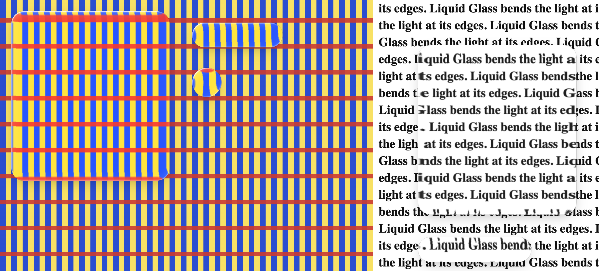

Tahoe Glass: bending light with an SVG filter
An Obsidian plugin that gives the Tahoe theme's floating surfaces real refraction, with colour split, glare and a pointer highlight, using SVG displacement maps instead of a shader.
The problem
Apple's Liquid Glass in macOS Tahoe doesn't just blur what's behind a panel. It bends it: content near the rim is squeezed and folded back on itself. CSS backdrop-filter can blur, tint and saturate, but it can't bend.
How the refraction is rendered
There is no WebGL and no shader. Chromium, which Obsidian runs on, accepts an SVG filter inside backdrop-filter, and that filter can use feDisplacementMap, which shifts each pixel by an amount read from an image. So the work is drawing the right image.
For each glass surface, LensHost.apply (src/main.js) reads the element's size and its four computed corner radii, and computeGlassMaps draws two RGBA maps for exactly that shape. A signed distance field for a rounded rectangle (roundedRectSdf) gives each pixel its distance from the edge and the outward normal. Inside the edge band, red and green encode a shift inward along that normal; everywhere else they stay at 128, which means "straight through".
How far to shift comes from edgeBend, which follows Liquid Glass Studio by Charles Yin (MIT, credited in THIRD_PARTY_NOTICES.md). At a point u across the band, the surface meets the eye at asin((1 − u)²), the ray refracts into glass of index 1.4 by Snell's law, and the content it lands on is shifted by tan(θi − θt). lensSpec sizes it: the band is about 20px (scaled by the Strength setting, at least 6px, at most 45% of the short side), the reach is 3.5× the band, and the reach is capped at 120px, because past that an 8-bit map shows visible steps.
The backdrop is never captured by the plugin: backdrop-filter hands the filter what's behind the element as SourceGraphic. The plugin only builds the <filter> (buildFilter), puts it in a hidden <svg> in the page, and sets --tahoe-lens: url(#tahoe-lens-N) on the element.

Dispersion and glare
Dispersion runs the displacement three times, at 1.14×, 1× and 0.86× of the base scale. Each pass keeps one colour channel through an feColorMatrix, and two arithmetic feComposite steps add them back up, so red bends a little further than green and blue a little less.
The second map, the light map, carries three signals in its channels. Red is glare, strongest where the edge's normal faces a light at the top left (−45°), with a weaker lobe on the opposite side. Green is a thin Fresnel rim all the way round, which fades out by about 6px in (rimLight). Blue marks the edge band, which the filter uses to confine a 1.1px blur to the band only, because feDisplacementMap doesn't interpolate and the fold would look jagged; the middle stays sharp. Glare isn't plain white: it brightens and saturates the bent content itself (feComponentTransfer, then saturate 1.9), so it picks up the colour behind the glass.
The pointer highlight isn't in the filter: onPointerMove sets --tahoe-mx, --tahoe-my and --tahoe-glow at most once a frame, and the theme draws a radial gradient there.
Keeping it fast
The full filter has 19 primitives, each working on a full-size copy of the surface. What keeps that in check:
- Off the main thread. The map pixel loops and PNG encoding run in a worker built from the functions' own source text (
WORKER_SOURCE,OffscreenCanvas.convertToBlob).MapMakerpre-decodes the PNGs and falls back to the main thread if the worker fails. - Reuse. Map sizes over 64px are rounded up to the next 8px and stretched to fit, so a slightly taller menu reuses one. Up to 40 idle filters and 24 idle maps are kept for menus that reopen.
- Lighter tiers. Surfaces 64px or less on their short side (toolbar buttons, the status bar) sit over scrolling notes and redraw every frame, so with Lighter glass on the toolbar they get a 4-step filter: the bend plus a rim light pre-drawn into the map.
- Animations. While a menu or the palette springs open,
applyattaches a quick filter (bend plus rim) and swaps in the full one onanimationend. Resizes of surfaces that already have glass wait 70ms to settle. - Battery saver.
watchPowerwatchesnavigator.getBattery()for charging changes and runs/usr/bin/pmset -gonce a minute to read low power mode. While saving (on battery, in low power mode, or set to Always), every surface gets the lite tier, without dispersion or coloured glare, and the pointer highlight stops updating.
Working with the theme
The plugin draws no glass itself; the theme owns the material, and --tahoe-lens is one slot in its chain: blur(...) var(--tahoe-lens,) saturate(...). Without the plugin the variable is empty and the theme falls back to frosted glass. The blur runs before the lens, so the bend itself is never blurred away.
With Refraction on, the plugin adds tahoe-refraction to the body and the theme switches to clear glass: the blur and tint scale with the square of --tahoe-glass-level, so most of the Glass level slider stays clear. On css-change every lens is rebuilt, since light and dark maps differ.
Tahoe Glass is desktop only, made on macOS, and not yet in the Obsidian community plugin directory.
More write-ups: A notebook inside a note · AI that stays on the Mac · Shipping seven packages